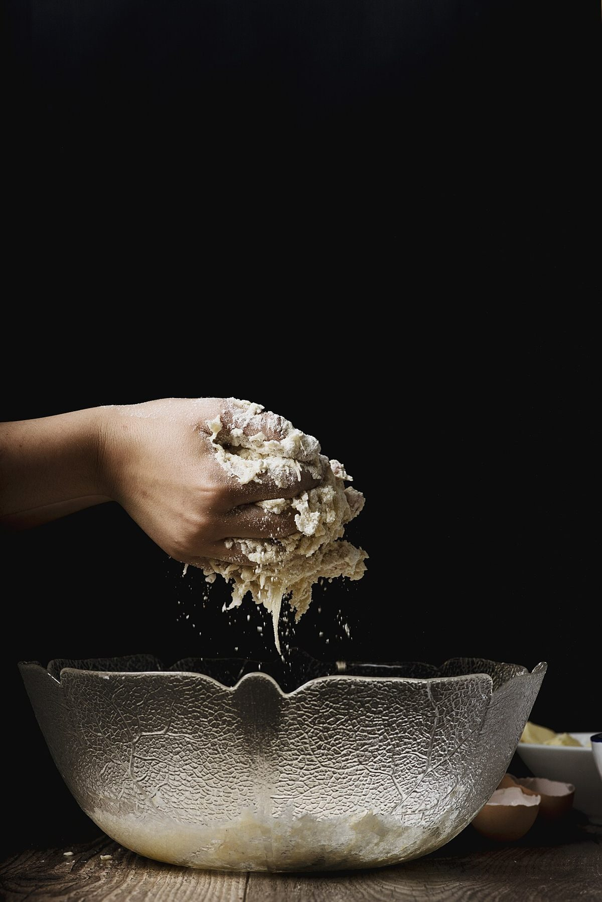

About
店のこと
お店の詳しい情報は、いまのところ確認できていません。
このページの「パンのある一日」は、制作側が想像して書いたものです。実際のお店の様子や、つくり方・営業の流れとは関係がありません。
Imagination / 制作側が想像して書いた
パンのある一日(想像)
- 朝
粉と水の、静かな時間
パンのお店の朝は早いのかもしれない、と想像します。まだ静かな時間に、生地と向き合う。そんな場面を思い浮かべました。

撮影地不明のイメージ - 昼
粉の山に、光がさす
粉は、見ているだけで季節を感じる素材かもしれません。写真は、お店とは関係のない粉のイメージです。

撮影地不明のイメージ - 夕
窯の火が、色をつける
焼き上がりを待つ時間は、どんな店でも少し特別な気がします。写真は国外の窯のイメージで、ときのぱんの設備ではありません。

国外のイメージ
Information
わかっていること
| 所在地 | 〒399-0703 長野県塩尻市広丘高出1935-6 |
|---|---|
| 電話 | なし |
| 営業時間 | 準備中 |
| 定休日 | 準備中 |
| ご予約 | 準備中 |
| 駐車場 | 準備中 |
| SNS | Instagram @tokino.pan |